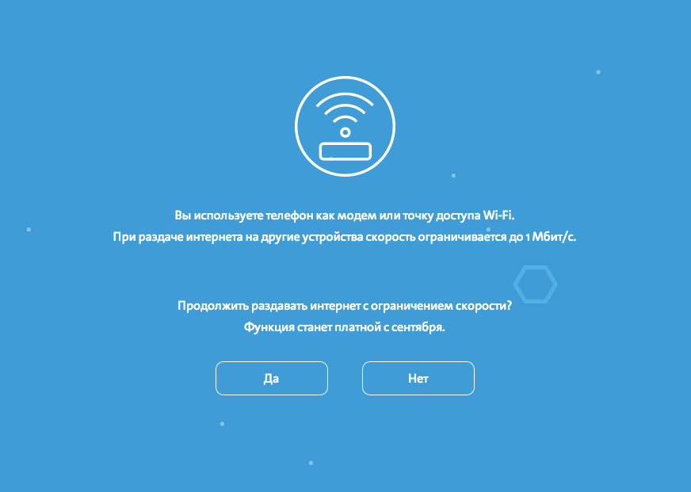

Как обойти запрет Yota раздавать интернет с телефона
Я пользуюсь Samsung Note 3 LTE (N9005). Оператор, с недавних времен, Yota. LTE на этом аппарате пока не поддерживается официально, по этому я решил сегодня сделать root на телефоне и вручную включить LTE.
Root получил по инструкции с ресурса 4PDA. LTE активировал дописав в файл /system/etc/lteon_netlist.xml строчку:
whiteLists numeric=«25011» ltestate=«PS/CSFB» operator=«Yota» country=«Russia» defaultMode=«GWL»
И выставив в настройках точки доступа владельца — LTE.
Дальше перезагружаем аппарат и в настройках можно выбрать новый режим LTE.
Завязка.
Прийдя домой я обнаружил что интернет через провод как бы есть, но страницы не открываются (обычное поведение провайдера в пятницу и субботу). И тут вспомнил, что есть у меня LTE! Включил режим точки, открыл браузер и увидел:

Как же быть?
Развитие.
Попытка пингов до нажатия на кнопку в зловещем синем окне не увенчалась успехом. Значит режутся не порты. Значит трафик режется на 3 (сетевом) уровне модели ОСИ.
Как Yota отличет пакеты телефона от пакетов ноутбука, при условии что ноут подключен через телефон? Откроем wiki и посмотрим из чего состоит пакет? В ходе анализа и изучения матчасти была выявлена разница между пакетами, это TTL! С телефона до Yota доходят пакеты с TTL = 64, а с ноутбука уже доходят пакеты с TTL = 63 (1 ttl уходит на прохождение через телефон)!
Кульминация.
Так как телефон рутован, то просто в файле /system/etc/sysctl.conf прописываем net.ipv4.ip_default_ttl = 63. Выключаем «Мобильные данные» и включаем. Заходим в браузер на ноутбуке и вуа-ля!
Другими словами
К базовой станции пакеты от телефона приходят с ttl = 64, а от ноута с ttl = 63. Что бы их выровнять, то на телефоне сделал в конфиге ttl = 63. В итоге и с телефона до базовой станции пакет идет с ttl = 63, и с ноута через телефон до базовой станции пакет идет с ttl = 63.
Из обсуждения
Вопрос: На фре PF с лёгкостью правит TTL и рандомизирует id и sn, так что понять сколько компьютеров за роутером не возможно, как и отличить их друг от друга. Я бы поискал как в iptables править ttl.
Ответ: А чего искать-то?
www.e-reading.me/chapter.php/79424/69/Andreasson_-_Iptables_Tutorial_1.1.19.html
Первая попавшаяся под руку ссылка на tutorial.
--ttl-set
--ttl-dec
--ttl-inc
Установка, уменьшение, увеличение. Все что хотите.